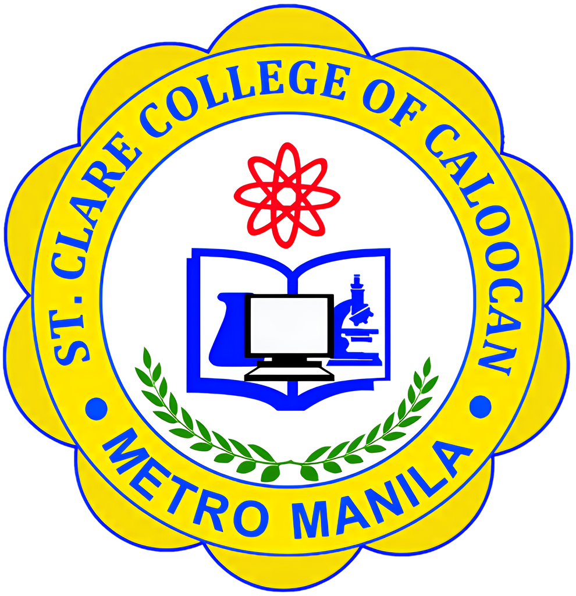
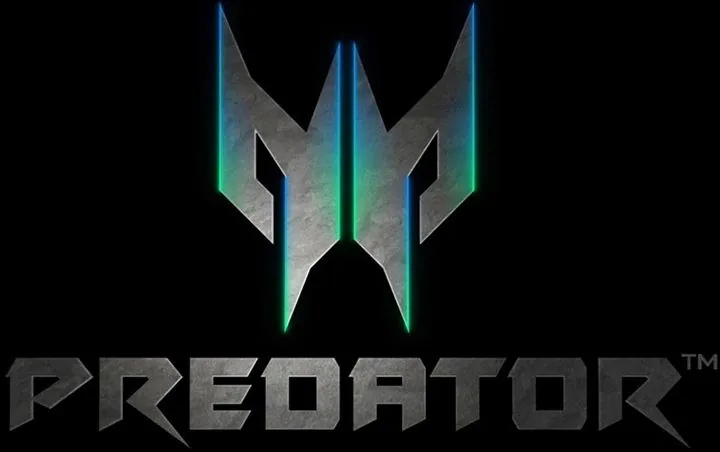

Vision
To become the leading institution for professional development and the first and foremost provider of quality, affordable and sustainable development education.
Home / About
St. Clare College of Caloocan is the School of Life Skills and a leading institution for professional development, founded 31 August 1985.
College: BS Hospitality Management, College: BS Business Administration, College: BS Computer Science, Since: 1985 in Caloocan City, College: Bachelor of Elementary Education, College: BSEd English, College: BSEd Mathematics, Campus: E-boards in all 95 classrooms, College: BS Tourism Management, College: AB Political Science, Learning: Full online or blended, SHS: ABM, SHS: HUMSS, SHS: Arts & Design, SHS: TVL-ICT, SHS: TVL-HE, Virtual Lab: VR + AR = mixed reality, Basic Ed: Nursery to Grade 10, Enroll: (02) 8232-4483
Quality, affordable and sustainable education for the total development of every Clarean.
To become the leading institution for professional development and the first and foremost provider of quality, affordable and sustainable development education.
To provide quality and excellent global education for the total development of a responsible, innovative, skillful and professional global workforce whose values and dignity are beyond par.
Long before the COVID-19 crisis, St. Clare College prepared its ICT capability, so that it was ready to embrace the new normal in education while continuing to provide quality, affordable and sustainable development education.

St. Clare's preparation for digital learning, through the efforts of its founder Dr. Clarita G. Adalem and the late chairman Dr. Ernesto M. Adalem, started with basic computer literacy as a subject in the pre-school and elementary levels.
Founded on 31 August 1985 in Caloocan City, Metro Manila.
St. Clare adopted e-learning by shifting to e-books, making it the 3rd school in the country to use tablets in lieu of physical textbooks.
St. Clare College became the first college in the country to use e-boards in all 95 classrooms, removing all blackboards and eliminating chalk dust. That year, Taiwan's ICT Division visited to help strengthen its ICT capability.
Development plans for 2019-2025 call for the entire campus to become a "wired college" meeting the 3 I's of online education: infrastructure, infostructure and infoculture. St. Clare launched its preparations for Education 4.0, collaborating with Optimus IT Solutions, Acer and Bicore One, provider of the FNET platform.
During the pandemic the college moved classes to its own online platform so no student got left behind. Its Start Up Module reached 547,806 views.
The Virtual Lab (VR + AR = MR) opened with the Predator Thronos and the Mixed Reality facility by Acer, and the college marked its 36th founding anniversary.
On 23 September 2023 St. Clare College introduced its Professional Mace: "The Eternal Flame of Professionalism", "a beacon of professionalism and culture of excellence".
The 38th Commencement Exercises were held in June 2024.
Transforming education, building our future. Select a photo to enlarge it.
Officials, facilities and the story of St. Clare Online.
School officials
2021
State-of-the-art facilities
2021
No one gets left behind
The original college seal, restored in high definition, leads a palette built on deep crimson and maroon, with the seal's gold as the accent.

The technology partners and SCO Online channels behind St. Clare Online.

Zabarte Road, Caloocan City. Office hours 9:00 AM to 5:00 PM.